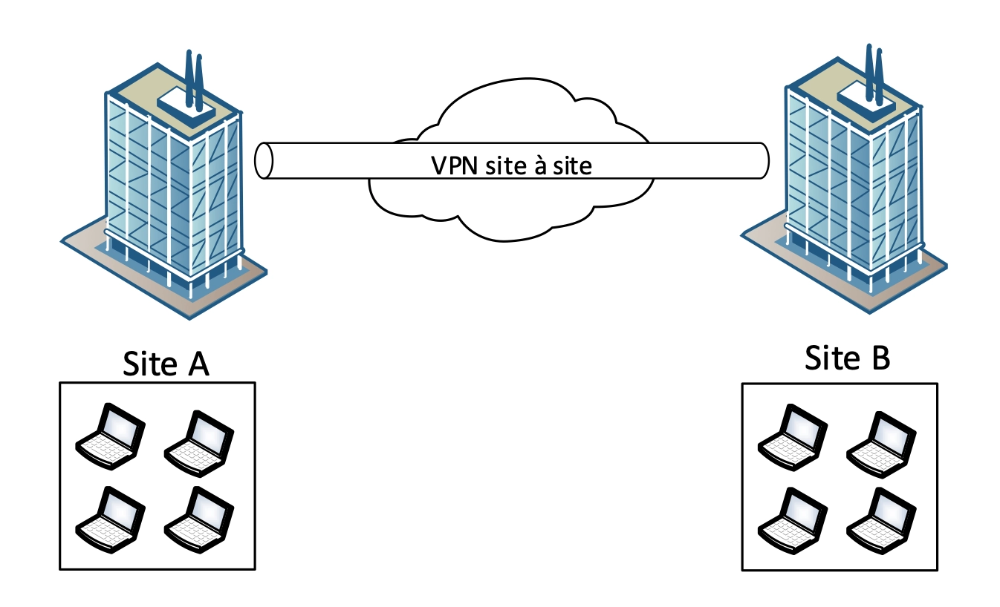

Comment fonctionnent les VPN ?
Les VPN sont souvent mentionnés dans les vidéos YouTube sponsorisées, vantés pour leur capacité à protéger la vie privée et à débloquer du contenu en ligne. Mais au-delà du marketing, il est important de comprendre ce qu'est réellement un VPN.
Un VPN (pour Virtual Private Network) est un service qui crée une connexion sécurisée entre un appareil et Internet. Il permet de chiffrer les données échangées et de les acheminer via un serveur distant, masquant ainsi l’adresse IP et anonymisant la navigation en ligne. Cela renforce la sécurité et protège la vie privée, rendant plus difficile pour des tiers, comme les fournisseurs d'accès ou les pirates, de surveiller les activités en ligne.
Mais concrètement, comment ça fonctionne, un VPN ?
Il existe principalement trois types de VPN, chacun conçu pour répondre à des besoins spécifiques. D'une part, le VPN site à site, qui permet de connecter plusieurs réseaux entre eux, souvent utilisé par les entreprises pour relier les différents bureaux. D'autres part, le VPN remote client qui permet à des utilisateurs individuels de se connecter à un réseau distant, comme dans le cas du télétravail. Enfin, il y a les VPN grand public, destinés à un usage personnel, qui permettent aux particuliers de sécuriser leur connexion Internet et d'accéder à du contenu géo-restreint.
Pour sécuriser les échanges de données à travers ces VPN, plusieurs technologies sont utilitées, comme IPsec, qui chiffre et authentifie chaque paquet de données, ou encore SSL VPN, qui se base sur des protocoles de chiffrement utilisés pour le web sécurisé. On retrouve également des solutions plus anciennes, comme PPTP, moins sécurisées mais encore utilisées dans certains cas.
VPN site à site
Le VPN site à site est conçu pour relier plusieurs réseaux entre eux, permettant ainsi aux utilisateurs d'accéder aux ressources de différents sites comme s'ils faisaient partie du même réseau local. Ce type de VPN est souvent utilisé par les entreprises qui ont plusieurs bureaux dispersés géographiquement, car il facilite la communication et le partage de données entre ces sites.

Concrètement, chaque site dispose d'un routeur ou d'un appareil dédié (souvent les pares-feux) qui établit une connexion sécurisée avec le réseau de l'autre site. Cette connexion est généralement configurée pour être permanente, ce qui signifie que les réseaux sont toujours interconnectés. Grâce à ce type de VPN, les employés peuvent accéder aux fichiers, applications et autres ressources de leur entreprise de manière sécurisée, peu importe où ils se trouvent.
Les VPN site à site utilise des protocoles de sécurité robustes tels qu'IPsec pour garantir que les données échangées restent confidentielles et protégées.
VPN remote client
Le VPN remote client permet à des utilisateurs de se connecter à un réseau privé depuis n'importe où, que ce soit à la maison, en déplacement ou sur un réseau public. Ce type de VPN est particulièrement utile les pour les travailleurs à distance et les professionnels qui ont besoin d'accéder aux ressources d'une entreprise sans être physiquement présents dans les locaux.
Pour établir cette connexion, l'utilisateur doit installer un logiciel VPN sur son appareil, qu'il s'agisse d'un ordinateur, d'une tablette ou d'un smartphone. Une fois connecté, les données échangées entre l'appareil et le réseau privé sont chiffrées, assurant ainsi la sécurité des informations.
Les VPN client